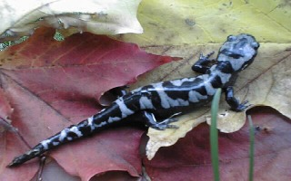

Starting with a 100 acre woodlot, our founder and benefactor, Monson, MA native Arthur D Norcross bought, bartered and traded to amass over 2000 acres he dubbed the Tupper Hill Sanctuary. And while it has grown to over 8000 acres of forests, meadows and wildlands we manage and maintain the land for the benefit of native plants and animals of New England, as Mr. Norcross directed.
We are honored to continue this work and recognize that preserving these special places not only benefits the wild things that need such places to survive but we also support the biodiversity humans require to thrive.
We hope you’ll find time this year to come join us for a lecture, a tour or a walk through our gardens and learn why we think this is a special place.
Karen Outlaw, Executive Director
